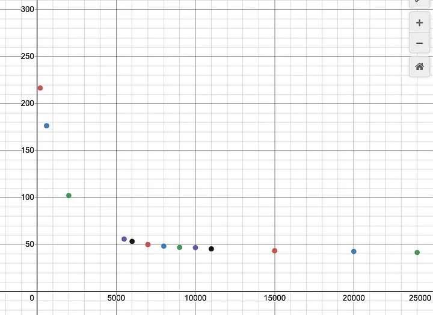

Recurrent neural networks (RNNs) are a type of artificial intelligence system that is modeled loosely after the neurons in the human brain. They are trained to process sequences of information, like words in a sentence or audio signals over time.
RNNs Have Advantages over the usual transformer, with the main specialty being that the memory usage remains stable at bigger context lengths. A context length of 1024 tokens, and 100k tokens, would use similar memory.
The tricky part with RNNs is getting stable with large context lengths, as RNNs issues like the Vanishing gradient problem, which can destroy benefits of large context lengths
I decided to try and RNNs to the test with CharRNN, a 140 line python implementation of an RNN by Andrej Karpathy.
The first attempt was for CharRNN with my NanoChatGPT dataset, and for CharRNN, the tokenizer size was around 9000 for all unique unicode characters. There were three Hyperparameters, Hidden Size, learning rate, and sequence length. the default values were 100(Hidden Size), 1e-1(Learning Rate), and 25(sequence length). I set the values 150, 2e-1, and left the 25 be.
The model started out with a loss of 233.48, absolute Gibberish, with random japanese characters and emojis everywhere.
I stopped the run after 30000 steps, as the loss curve went upwards for the last 6000 steps, with the last drop in loss at 24K.
The NanoChatGPT Dataset is based of text data, data from online forums, reddit, and other similar stuff, making it really noisy. I tried this again with the oasst Guanaco Dataset, far less noisy.
This run was not as successful, and the loss went up after 5000 steps, when loss was still at 98.01. Another run with a very Low learning rate, 1e-5, was only slightly different, upturning at 3000 steps, but at a loss of 85.81.
One hypothesis I did have on this was that the models simply couldn’t get used to the step that the NanoChatGPT run made it till, and that was using mainly english, and using less emojis and chinese/japanese characters. I made a new run, this time on the English quotes dataset, and was slightly more successful, this run upturned in loss after 14000 steps, at a loss of 78.1 .
After trying a variety of hyperparameter tunes, none of them getting better than the original NanoChatGPT run, I decided to try it with Karpathy’s own Tiny Shakespeare Dataset, where I got to a loss of 48.01 at 100000 steps, before a huge upturn in loss, pushing loss up to 200 again.
Well we live in 2023, and we have much better tokenization than character level tokenization. Changing the script to include TikToken was a better idea. The model started with complete words from the beginning, although they made no sense. By 1300 steps loss was coming out better than any other run so far, at 74.47, steadily decreasing the whole time. by 2000 steps, it was still steadily decreasing at a loss of 40.7, a loss of 26.11 by 2500 steps. At step 4000, we reach a loss of 8.6. The run finally stalled at 8000 iterations, interchanging between 3.83 and 3.85.
In the end, the model could make shakespeare formatted sentences, with some real words and some gibberish, though the sentence wouldn’t make any grammatical sense. This research run proved fruitful in figuring out how RNNs work and tweaking around with them. For a more serious approach, I would probably try to work with the official Andrej Karpathy CharRNN lua script, although its outdated lua, it has support for checkpoints, stronger sampling, and GPUs, but for LLMs, RWKV-LM is the most powerful out there right now, fully functional, and fairly powerful.
Colab to the project: https://colab.research.google.com/drive/1hIfLGBlauuDq1fsEPVrxnI9CiLLwZyL6?usp=sharing